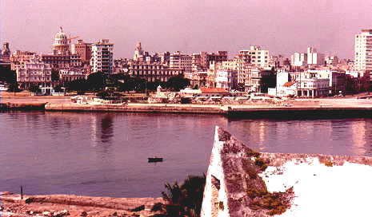
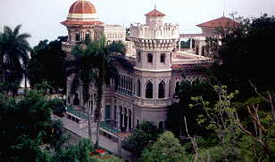
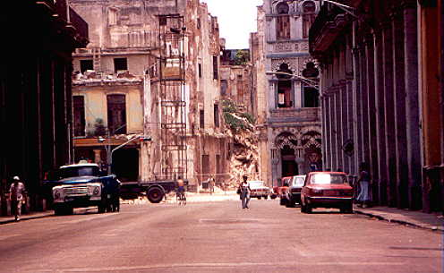
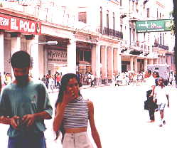
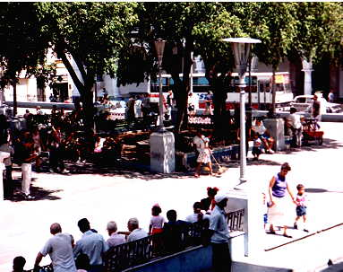
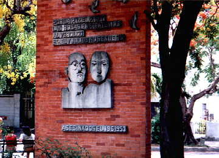

Photos by Fred Weiner

Havana's skyline from Morro Castle
The dome of the Capitol Building in the background was modeled after the United States.

This was a private home in Cienfuegos, and is now a restaurant

Crumbling Havana

Downtown Havana

Downtown Santiago de Cuba

Monument to the Rosenbergs
Fred's Photos - Page Two